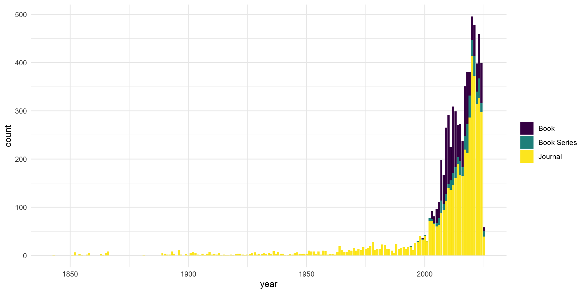
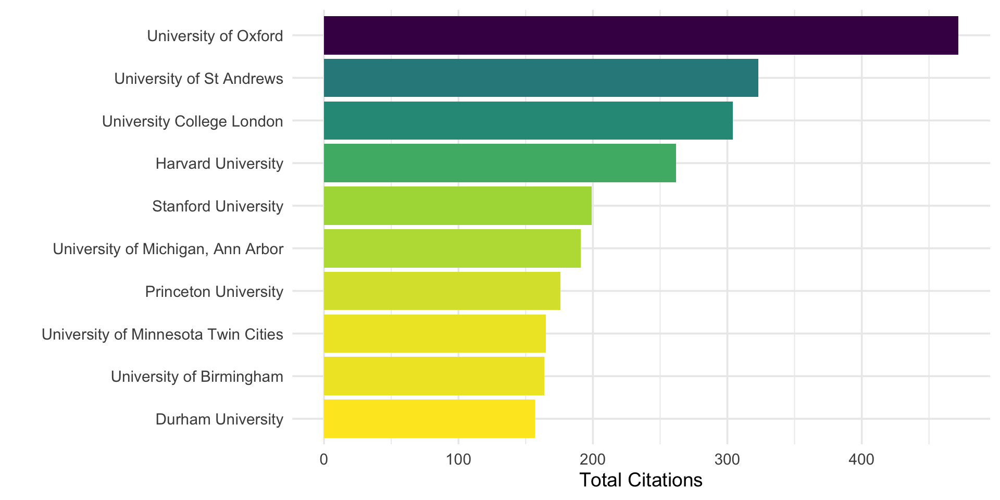
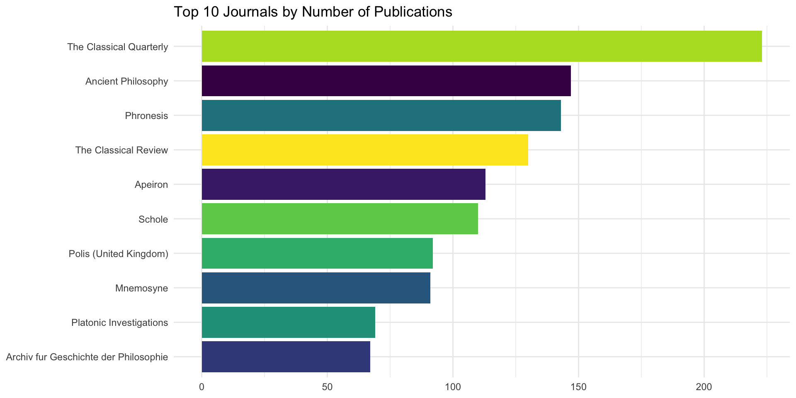
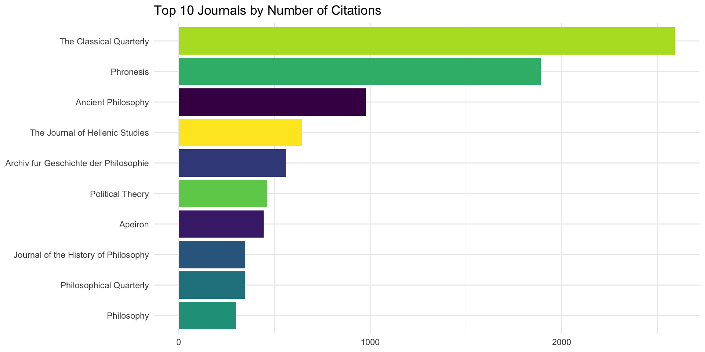
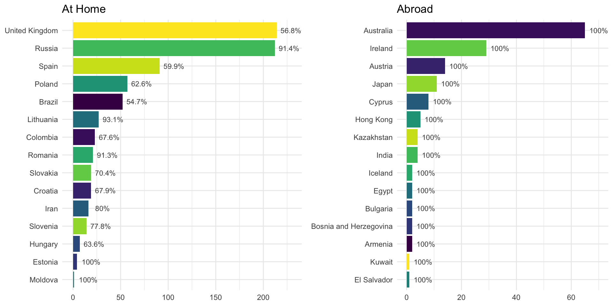

| creator | title | publicationName | publisher | year | issn | volume | issue | page_range | cited_by_count | aggregation_type | subtype | affiliation_name | affiliation_city | affiliation_country | publisher_country |
|---|---|---|---|---|---|---|---|---|---|---|---|---|---|---|---|
| Arruzza C. | Wearing Virtue: Plato’s Republic V, 449a-457b a... | Revista Archai | Coimbra University Press | 2023 | 21794960 | 33 | NA | NA | 3 | Journal | ar | Eugene Lang College of Liberal Arts | New York | United States | Portugal |
| Balla C. | Plato and the Sophists on Greed and Savage Huma... | Polis (United Kingdom) | Brill | 2018 | 0142257X | 35 | 1 | 83-101 | 3 | Journal | ar | University of Crete | Rethymnon | Greece | Netherlands |
| Notomi N. | Plato's Metaphysics and Dialectic | A Companion to Ancient Philosophy | NA | 2012 | NA | NA | NA | 192-211 | 3 | Book | ch | Keio University | Tokyo | Japan | NA |
| Cornelli G. | Why Plato could not simply embrace Democracy? M... | Revista Archai | Coimbra University Press | 2024 | 21794960 | NA | 34 | NA | 1 | Journal | ar | Universidade de Brasília | Brasilia | Brazil | Portugal |
| Wei L. | Plato's attempts at defining sophistry | Frontiers of Philosophy in China | Brill | 2013 | 16733436 | 8 | 4 | 566-584 | 1 | Journal | ar | Renmin University of China | Beijing | China | Netherlands |
| Mársico C. | Inter-epochal dialogues in the platonic Alcibia... | Eidos | Universidad del Norte | 2021 | 16928857 | NA | 35 | 15-39 | 0 | Journal | re | Consejo Nacional de Investigaciones Científicas y Técnicas | Buenos Aires | Argentina | Colombia |
Mapping Platonic Scholarship in Scopus
A Bird’s-Eye View
Olga Alieva
June 25, 2025
Link to the Presentation

1. What’s this all about
This paper presents an exploratory analysis of the global distribution and publication trends in Platonic scholarship
It is based on open-access metadata retrieved mainly (but not exclusively!) through the Scopus API (Application Programming Interface = a connection between computer programs)
Scopus is a comprehensive abstract and citation database launched by Elsevier in 2004 to provide researchers and institutions with a tool to access scientific literature, track citations, and assess research impact across disciplines.
2. Limitations
While Scopus is one of the most extensive citation databases available, it is not neutral or exhaustive — especially when it comes to humanities disciplines like philosophy.
The database prioritizes English-language publications and journals indexed after 2004, leading to the underrepresentation of non-English, historical, and specialized venues for Platonic scholarship.
Many important works in classical philology or philosophy may appear in sources not indexed by Scopus, or may be published in books, edited volumes, or older journals excluded from its coverage.
3. Nevertheless…
- Scopus offers a useful proxy for identifying broad patterns in the contemporary dissemination of Platonic research.
- It helps to quantify global trends in academic publishing and to visualize key features of Platonic scholarship.
- Scopus also facilitates a macroscopic, data-driven approach to the field of Plato studies.
4. The dataset
- This research draws on about 7,500 publications indexed in Scopus that include Plato as a subject (based on title or key words).
- It was collected using programmatic tools in R — specifically the
{rscopus},{rcrossref},{openalexR}packages and LLM via{ellmer}. - Dataset includes data on authorship, national affiliation and information on publishers, including their location.
5. A Preview of the Dataset
6. Number of Publications on Plato by Year
7. Number of Publications on Plato by Country
8. What are the most cited publications?
9. What about journal articles?
10. Who are the most cited authors (books excluded) ?
11. Top 10 Institutions by Total Citations of Plato Journal Articles
12. International Participation over Time
13. International Citation over Time
14. Affiliation Trends
In recent years, there has been a noticeable rise in the number of authors listing affiliations with the Global South and Russia, moving beyond the traditional dominance of Europe and the USA.
In terms of visibility and citation impact, these affiliations still lag behind traditional centers such as Oxford and Harvard; however, this trend is gradually changing.
15. Top 10 Journals by Number of Publications on Plato
16. Top 10 Journals by Number of Citations
17. Citation Trends
Over the past decade, newly established Russian journals – Platonic Investigations (founded 2014) and ΣΧΟΛΗ (founded 2007) – have actively pursued Scopus indexing policies, successfully entering international databases.
This strategic approach has resulted in a substantial increase in indexed publications on Plato studies, positioning these journals as significant contributors to the global discourse on ancient philosophy within the Scopus ecosystem.
While these Russian journals have yet to match the citation metrics of established Western publications like Phronesis or Classical Quarterly, there is demonstrable growth in citation patterns, particularly within domestic scholarly networks, indicating an emerging influence in international Platonic scholarship.
18. Proportion of Domestic vs. International Publishing
Feedback
- @locusclassicus
- alieva.mgl@gmail.com
- github.com/locusclassicus
- hse-ru.academia.edu/OlgaAlieva